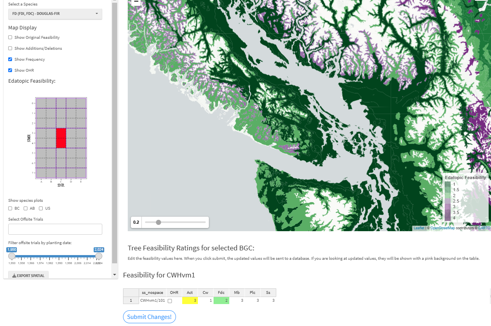
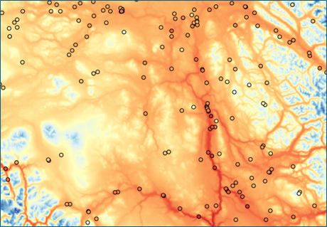
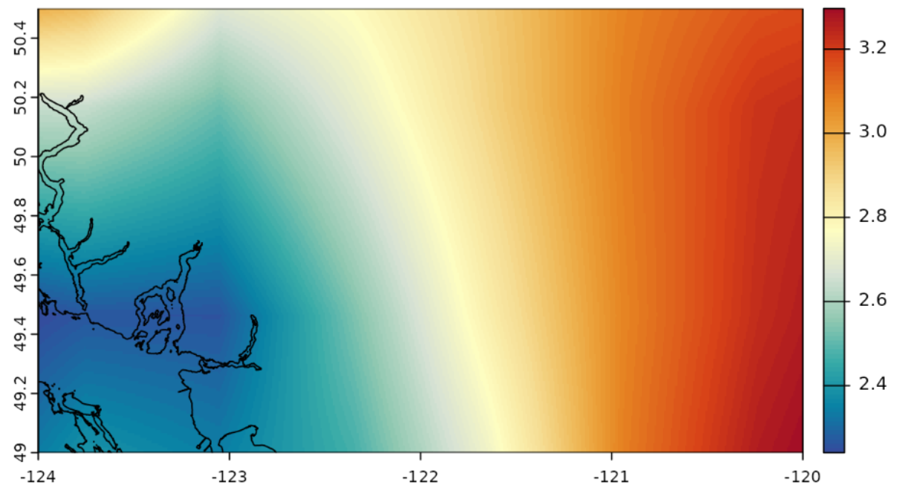

5 Known Issues
5.1 Known issues with the CCISS tool :(
This section is focused on aspects of the CCISS analysis related to trade-offs and intrinsic sources of error. We also list bugs or minor enhancements that have not yet been resolved. If you have an problem or suggestion to report, you can enter it as a “New issue” in our GitHub repo .
5.1.1 Issues requiring fixing
The CCISS tool should only take about 10 seconds to load at startup. However, it has recently been taking up to 50 seconds. We are investigating this issue.
The CCISS tool is currently missing CFRG species suitability ratings (“Suitability” tab) and silvics information (“Silvics” tab) for coastal subzone/variants, this is associated with updating to the new coastal BEC version (BEC13). We will update this information using a crosswalk table from BEC v12 coastal site series (LMH 26 and
- to BEC v13 (LHM77) asap.
OHR (Outside Home Range) species suitability ratings for white pine (Pw) have been added in the Skeena Region. However, the CCISS tool does not include the full extent of white pine suitability outside of home range. Additional modeling and expert knowledge is needed to complete the distribution of white pine OHR suitability. This work is ongoing and will be documented and integrated into the CCISS tool. See “Methods” - “Outside Home Range” for more information.
There are known issues related to the classification and mapping of northern BGC units. This includes unclassified units, labeled “un”, for example SWBun or ESSFun. Additionally, some current BGC units may need to be split in the future. For example, the SBSwk1 has been mapped differently in the Omineca vs. Cariboo Regions. Douglas-fir is very rare in the Cariboo SBSwk1 but more common in the Omineca. SBSwk1 mapping will likely need substantial revisions in the Omineca.
5.2 Sources of error in data and analyses
Understanding potential sources of error is essential for appropriate use of the CCISS tool. The CCISS methodology has many components such as the species suitability ratings, climate mapping, biogeoclimatic modeling, biogeoclimatic classification, and climate data downscaling. Each of these components have their own degree of error that can carry through into the CCISS tool results, emphasizing the importance of professional scrutiny in the interpretation of these results.
While often used interchangeably, error and uncertainty are different processes. Error is the absolute difference between an estimated value and the ‘true’ value for a quantity of interest that, in most cases, is unknown. Thus, unlike uncertainty, error cannot be directly quantified. However, understanding potential sources of error can help users determine appropriate uses for CCISS projections.
5.2.1 Suitability ratings
Tree species’ environmental tolerances are complex and many approximations are required to translate them into a simple suitability ratings metric used in CCISS. Suitability ratings for each tree species in each site series have been assigned primarily through expert judgement with support from vegetation plot data. There are inevitably errors in this database, particularly for species that were not historically prominent in reforestation, such as deciduous species. The suitability ratings are undergoing ongoing review by the CCISS team and regional ecologists. Further, the CCISS team is currently conducting predictive modeling to quantitatively evaluate and refine suitability ratings. For more information see Methods > Expert Review
Figure 1: Screenshot of the By-BEC Portal, which facilitates expert review and revisions of the CCISS suitability ratings. This example shows suitability ratings for western redcedar on zonal sites, with editing for the CWHdm open.
5.2.2 Climate mapping
The reference climate maps for CCISS are the PRISM (Parameter-elevation Regressions on Independent Slopes Model) climate surfaces of temperature and precipitation at 800m spatial resolution developed by the Pacific Climate Impacts Consortium. These surfaces are best-in-class, but they have important limitations. They are interpolated from weather station data that is sparse in many regions of BC (Figure 2). Most valleys and some larger regions have no stations, so the nuances of climate in these locations may not be well represented, particularly cold air drainage and elevational gradients. Further, the PRISM method does not model microclimatic factors such as heat loading (warm vs. cold aspects), vegetation influences, and lake effects. Microclimatic factors need to be accounted for during professional interpretation of CCISS results.
Figure 2: PRISM climate map of July daily maximum temperature, in the Cariboo-Chilcotin region. Stations are concentrated at low-elevations and are absent from large areas, demonstrating the potential for errors in the climate mapping.
5.2.3 Biogeoclimatic (BGC) modeling
Biogeoclimatic modeling involves using machine learning to classify climate conditions as biogeoclimatic units (subzones/variants). We have found that BGC projections are sensitive to many aspects of model training, especially climate variable selection. The current version of the BGC projections is a work in progress, and future refinements will be made. As more end users engage with the CCISS tool, additional issues may come to light.
We have already identified several areas for improvement. One key issue is that the baseline maps are not being perfectly reconstructed, resulting in fuzzy boundaries, and the over- and underrepresentation of certain BGC units. For example, the Coastal Mountain-heather Alpine (CMA) zone in the Pemberton region appears to be consistently underrepresented.
Additionally, future projections appear highly sensitive to changes in sampling scheme, climate variable sets, and Random Forest model hyperparameters. These factors will be closely examined in future iterations to improve the model’s predictive ability. For more information, refer to the Biogeoclimatic Projections technical report.
5.2.4 Climate data downscaling
Climate changes are modeled in CCISS by overlaying very coarse-scale global climate model projections (50-150km resolution; Figure 3) onto the 800m PRISM climate maps, a method called change-factor downscaling. This approach results in a uniform warming rate from valley bottom to mountain top. In reality, we would expect elevation-dependent differences in warming rate due to loss of snowpack, for example. Similarly, change-factor downscaling can’t represent the role of other fine-scale features like lakes, vegetation, cold-air pooling, aspect, and soil moisture in modifying the regional average climate change. The Ministry of Forests’ ClimatEx project seeks to improve the spatial resolution of climate change modeling, but will not be integrated into CCISS for at least two years. CCISS users are encouraged to consider the role of site-specific modification of regional climate changes.
Figure 3: Coarse resolution of climate changes provided by global climate model data. This panel shows the low-resolution interpolated changes in July mean temperature for the EC-Earth3 global climate model for the 2041-2060 time period, relative to the model’s 1961-1990 climate. The coastline of Vancouver is shown for scale.
5.3 BGC mapping as a baseline
CCISS results assess change in species suitability relative to the official biogeoclimatic mapping, rather than the baseline prediction of the biogeoclimatic model. This approach breaks a standard practice of climate impacts modeling: change in a modeled quantity should be assessed against a modeled baseline. We have taken this approach to simplify interpretation of CCISS results. Our rationale is explained below.
Biogeoclimatic models are trained on biogeoclimatic mapping (the response variable) and 1961-1990 climate normals (the predictor variables) for a sample of locations. When the model is then used to predict the biogeoclimatic unit from 1961-1990 climate normals, this is called a baseline prediction. Baseline predictions do not perfectly reproduce the original biogeoclimatic mapping because of imperfections in the biogeoclimatic model, biogeoclimatic mapping, and climate mapping. Biogeoclimatic models typically have baseline prediction error of ~20%, meaning that the baseline biogeoclimatic prediction is different than the official biogeoclimatic subzone/variant mapping on about 20% of the landscape. In many cases where these differences occur, the predicted unit is closely related to the mapped unit and there is negligible consequence for tree species suitability inferences.
Baseline predictions are the technically correct point of comparison for biogeoclimatic projections of recent or future climates. If the mapped biogeoclimatic unit is used as a baseline, there is the potential to confuse model error with an actual change in climate. This conflation of model error with real changes causes overestimation of biogeoclimatic turn-over, but it can produce underestimation or overestimation of changes in species suitability. The impact of this conflation will be greatest in the recent period (2001-2020) since the magnitude of prediction error relative to climate change decreases over time.
Even though a modeled baseline prediction is strictly more correct, we have chosen to use the official biogeoclimatic mapping as the baseline for CCISS results. The benefit of this approach is that the starting point for users will be the expected biogeoclimatic unit and species suitability ratings of their locations of interest. The alternative–using the modeled baseline prediction–would in some cases produce a baseline biogeoclimatic unit that is different than the biogeoclimatic unit of interest. This would not be tenable for core CCISS end uses such as silviculture prescriptions and stocking standards development.
Given that the mapped and predicted baseline biogeoclimatic unit are different on <20% of most landscapes, and that these differences are inconsequential for species suitability interpretations in many cases, the practical impact of this approach is likely not large. Nevertheless, we have not yet assessed this issue quantitatively. Users are encouraged to use the CCISS spatial module to assess baseline prediction errors for locations of critical interest and to consider the implications for species suitability interpretations.
5.4 Space-for-time substitution
The CCISS analysis is a space-for-time substitution: it uses observations of tree species’ tolerances across spatial gradients in climate to infer each species’ response to future climate changes. In other words, to understand tree species suitability in a hotter future at any location, we study tree species suitability in warmer places (climate analogs downhill and to the south). The space-for-time substitution approach is useful and necessary; the alternative would be physiological modeling of each tree species, a process with its own assumptions, sources of error, and data limitations. Nevertheless, there are limitations to the space-for-time substitution approach. This approach assumes that spatial differences in environmental conditions mirror the temporal changes expected under climate change, with the added assumption that tree responses to these conditions are consistent across both space and time. The errors associated with violations of these assumptions will vary depending on the species, site, region and silvicultural system.